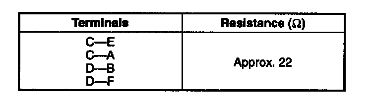
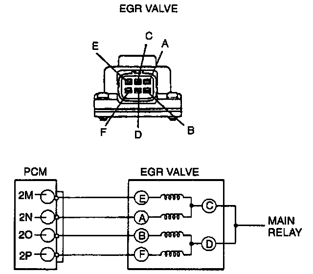
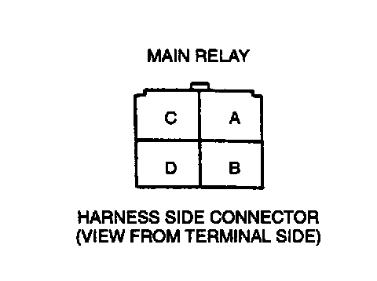

EGR Valve: Testing and Inspection
On-vehicle Inspection1. Carry out the "EGR Control Inspection".
2. If not as specified, perform the further inspection for the EGR valve.
Resistance Inspection
NOTE:
- Perform the following test only when directed.
1. Disconnect the negative battery cable.


2. Inspect resistance of the EGR valve coils.
3. If not as specified, replace the EGR valve. If as specified but the Simulation Test is tailed, inspect following:
Vacuum hose improper routing, kinks or leakage.
Open circuit
- Ground circuit (EGR valve connector terminal E and PCM connector terminal 2M)
- Ground circuit (EGR valve connector terminal A and PCM connector terminal 2N)
- Ground circuit (EGR valve connector terminal B and PCM connector terminal 2O)
- Ground circuit (EGR valve connector terminal F and PCM connector terminal 2P)

- Power circuit (EGR valve connector terminal C or D and main relay connector terminal D through common connector)
Short circuit
- EGR valve connector terminal E and PCM connector terminal 2M to ground
- EGR valve connector terminal A and PCM connector terminal 2N to ground
- EGR valve connector terminal B and PCM connector terminal 2O to ground
- EGR valve connector terminal F and PCM connector terminal 2P to ground
4. Remove the EGR valve, and inspect for any damage or clogging. Replace the EGR valve if not as specified.
5. Connect the negative battery cable.